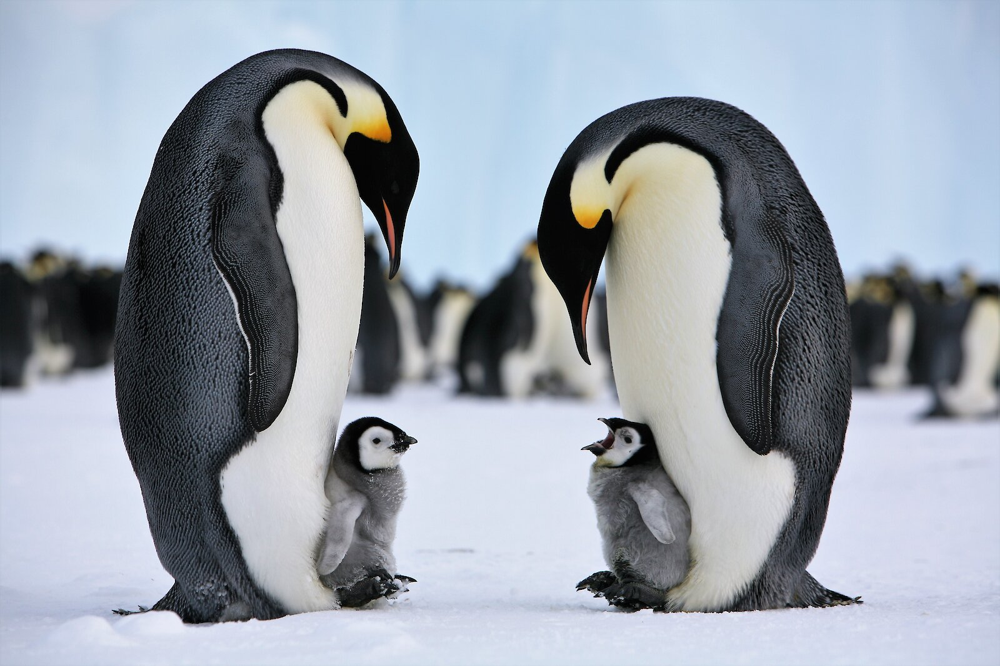

Birds
¡Bird are fasinating with lots of variation in wing span, flight, abillity,speed and size!
Watch this video abut the fastest animal in the planet, the perigrin falcon.
Information on some Bird Species:
Name |
Picture |
Fun Fact |
|---|---|---|
| Perigrin Falcon |
 |
When diving it's top speed is 390 km/h |
| Ostrich |  |
It's the worlds largest bird |
| Emperor Penguin |
 | the deepest dive by an Emperor Penguin is 564m |
| Kiwi |  |
They are the only birds that have nostrolis on the end of there beak |